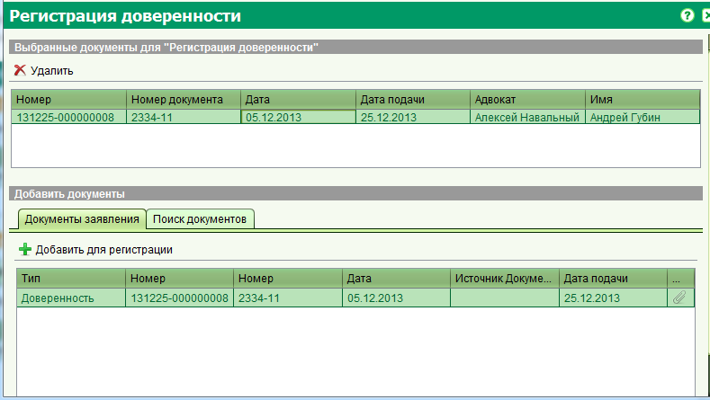

Регистрация документа
Форма регистрации документа позволяет вам зарегистрировать в системе документы, которые в последствии могут быть многократно использованы
при регистрации прав недвижимого имущества. Форма регистрации документов может быть открыта из заявления при запуске таких услуг как
"Регистрация доверенности" или "Регистрация типового документа".

На форме регистрации документов вам необходимо выбрать документ из списка прикрепленных к заявлению, либо найти его
в уже существующих документах сохраненных в системе. Для добавления документа на регистрацию, выберите его в списке и нажмите кнопку

Вы можете добавить любое количество документов на регистрацию.
Для удаления документа из списка на регистрацию, выделите его из списка выбранных документов и нажмите кнопку

Смотрите также: